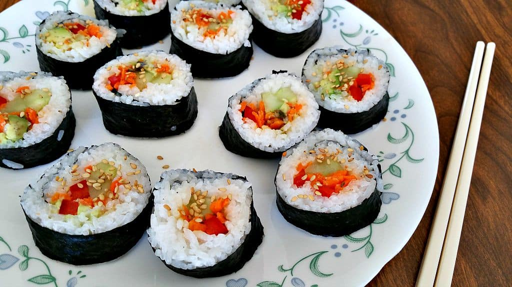

Ingredients:
vegetables of choice, suggested include:
cucumber
carrot
bell pepper
asparagus
avocado
2 cups of uncooked sushi rice
2 1/2 cups of water
1/4 cup of rice vinegar
1 pack of sushi nori
Supplies:
sushi mat or clean towel
any available knife
microwave
measuring cup
spoon
microwave-safe bowl
cutting surface or plate
ruler or tape measure
scale
level
Now we arrive at the crafting of the components. This recipe begins with the cooking of the sushi rice. The grains will rise to perfect fullness in the confines of a college dorm microwave. Simply pour the quantities of rice and water into a microwave-safe bowl and cook for 10 to 12 minutes, or when the texture has reached desirable stickiness. Pour in the rice vinegar, stir until all elements have been incorporated on the molecular level, to create the most chemically homogenous mixture possible. Stop only at the breach of perfection.
The reader will then approach the vegetables. Cutting boards are a rare sight in college dorms; however, paper plates are not. The reader is advised a scale with which to weigh the vegetables to ensure uniform quantities across rolls. A suggested quantity of 50 grams of vegetables should be placed in each roll. There are several combinations of vegetables deemed suitable for this recipe. Cucumber for lightness, carrot for crunch, bell pepper for sweetness, asparagus for bitterness, avocado for cream. Experimentation is encouraged. Vegetables will be chopped to exorbitant thinness and held against a blade of grass. If the width exceeds, the reader should proceed with another chop. The object here is goodness, after all, and goodness cannot be achieved in the absence of effort.
For construction, the reader should begin laying the rice on each piece of nori. The height of the rice should not exceed 3/7 of an inch. Advisory permits the reader to move each individual grain of rice to promote uniformity. If again the reader has use of a scale, each rice-and-nori slab should be weighed to promote that uniformity to the precise hundredth of a gram. Once this process is complete, vegetables should be allotted their places in the center of the rice-and-nori slab. Each bundle of vegetables will again be weighed for uniformity.
The sushi will be transferred onto a mat or towel and rolled into its final form. A reader may use a measuring tape to ensure the radius extending from the vegetables to the nori is consistent for every roll. If the reader finds an inconsistency, the sushi may be re-rolled until consistency is achieved.
And the final step, of course, is the cutting of the sushi. Each roll should be 3/4 of an inch, verified through measuring. After the cutting, the quality of the cut should be assessed with use of a level tool. If the cut has not achieved an acceptable quality, it should be reattempted until level.
And now, congratulations reader! You have constructed the most beautiful, the most harmonious, the most perfect college dorm vegan sushi known to humankind. You have traversed the depths of light and shadow to produce a roll that pulses and throbs with clockwork. You have stood in line with the ancients to bring the horn of antiquity to our sushi mats.

Description: a picture of the perfect completed vegan sushi, sourced from brandnewvegan.com
Sushi nori itself is a richly beneficial food in the vegan diet, as it offers a reliable source of vitamin B12 and iodine. Many adherents to the vegan diet are naturally deficient in those nutrients. The vegetables present in the sushi will likely be high in fiber, a supporter of gut health and regulated blood sugar.
The benefits of perfectionism itself are numerous. Not only will the perfectionist succeed in making a (sometimes) perfect product, but one might also encounter disrupted sleep, imposter syndrome, social anxiety, autoimmune disorders, gut imbalances, depression, and many other happy side effects. Wield your perfectionism wisely.